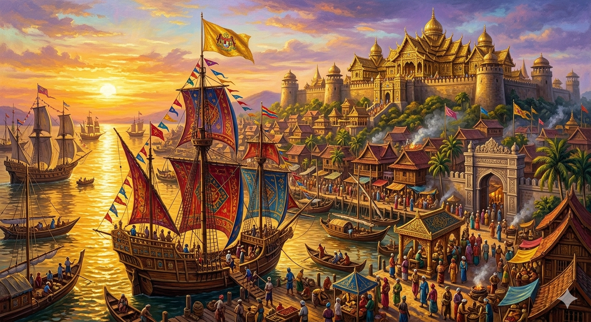
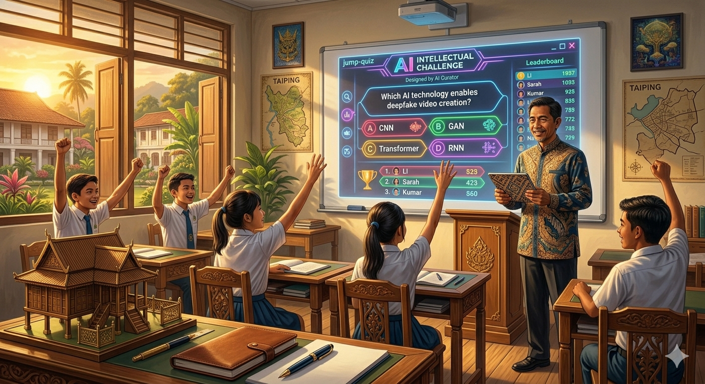

精选历史体验
马六甲：东方十字路口
海上贸易 · 文明交汇 · 角色抉择
EXPLORE THE PAST
选择一个时代，走进去。
从马六甲海峡到欧洲大陆，探索不同历史处境中的选择。
没有找到相关游戏，请换一个关键词或地区。

FOR TEACHERS
教学的另一只手。
备课、课堂展示与比赛管理，集中在这里。
TAKE A BREAK

海上贸易 · 文明交汇 · 角色抉择
从马六甲海峡到欧洲大陆，探索不同历史处境中的选择。
没有找到相关游戏，请换一个关键词或地区。

备课、课堂展示与比赛管理，集中在这里。